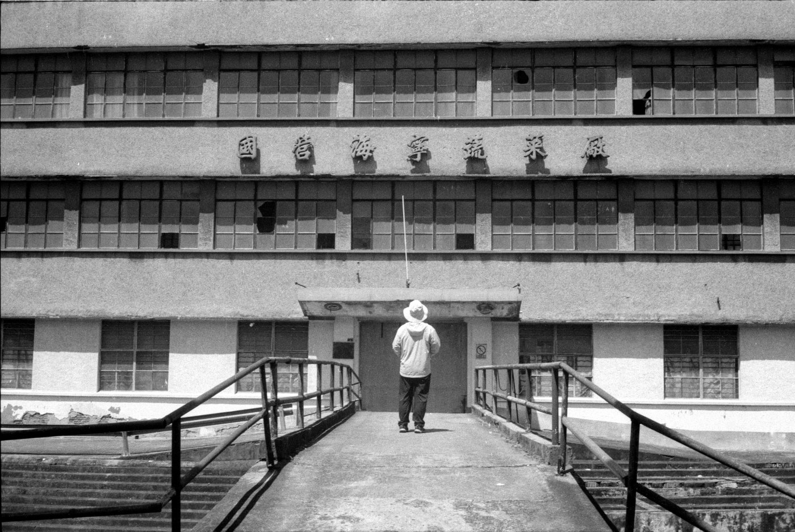
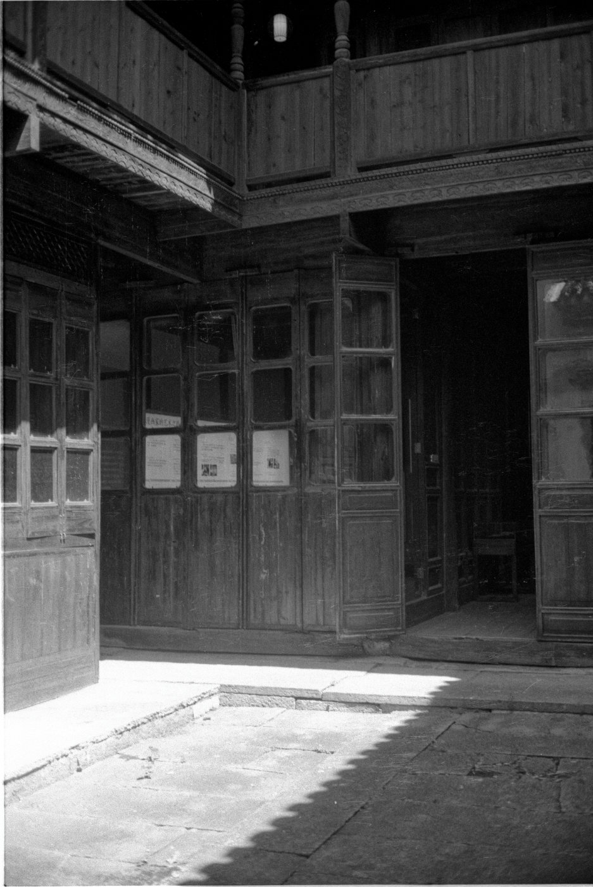
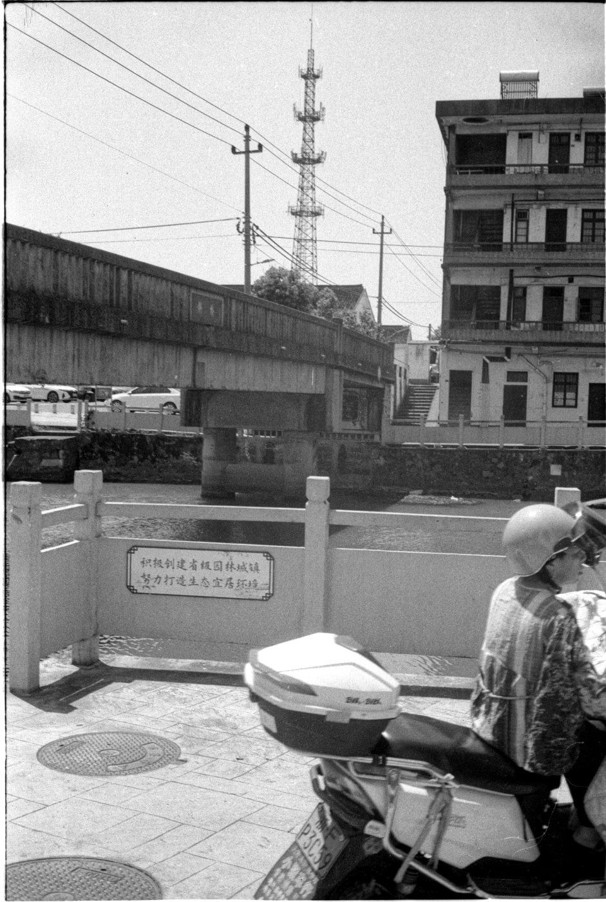
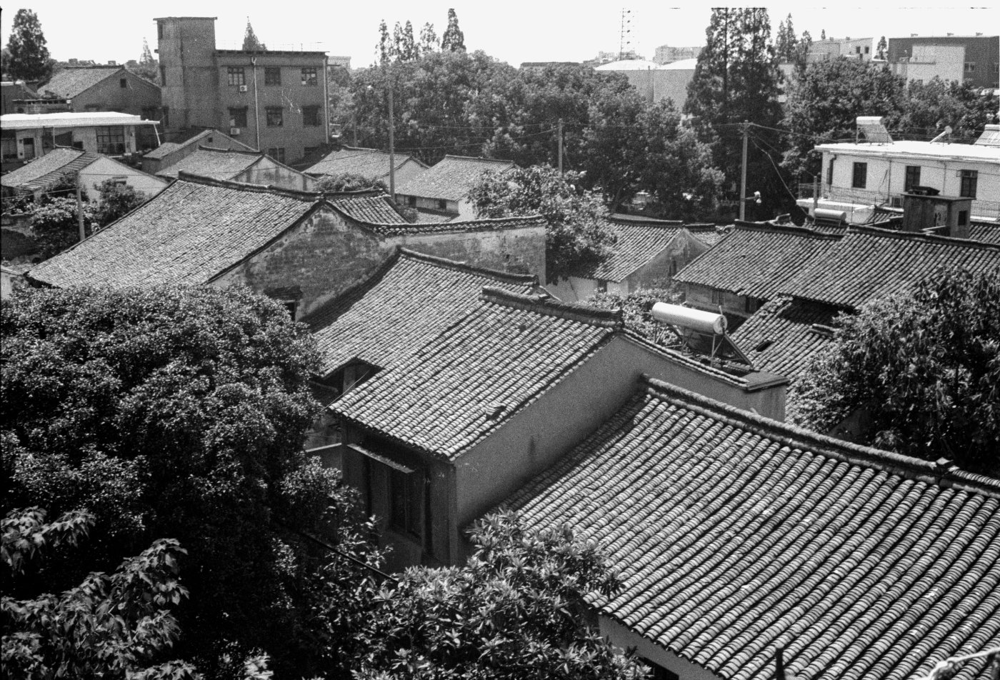
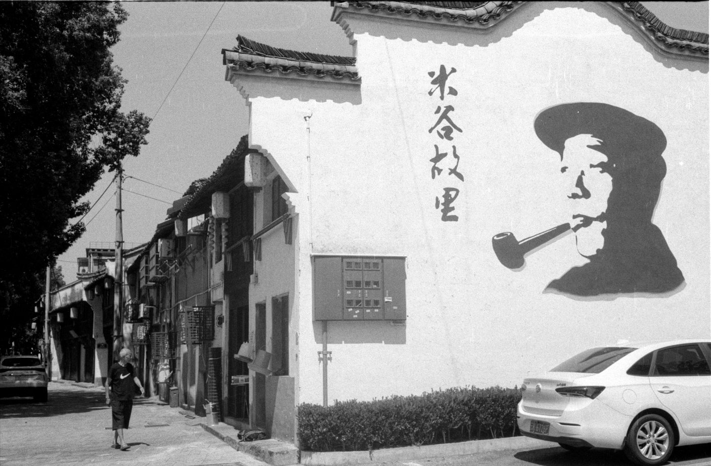
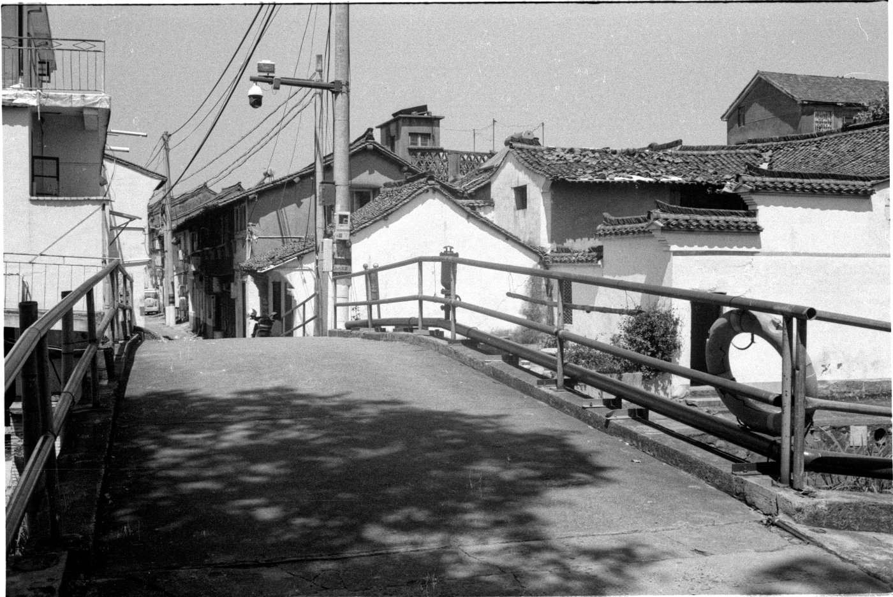
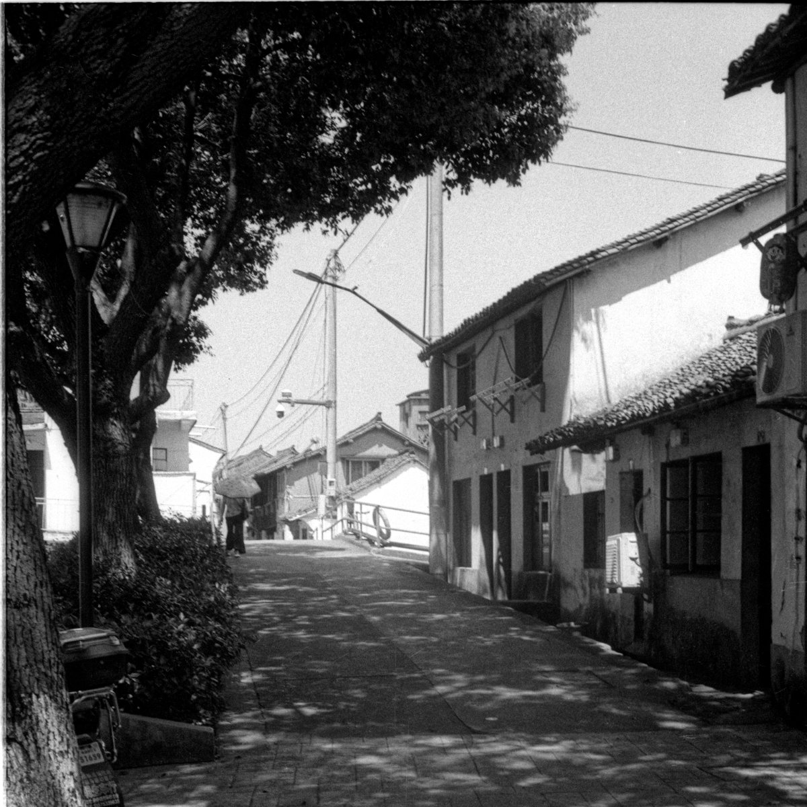

拍完 斜桥火车站旧址 ，我们移步附近的斜桥镇老街。斜桥镇因斜桥得名，关于这个名字的由来，有首诗挺有意思：“曲人曲橹摇曲港，斜风斜雨过斜桥。
这是我第一次使用福马黑白胶卷。店家冲好后，用富士 SP500 扫描了一份电子照片。我看到后吓了一跳，以为不是拍坏了就是冲坏了——反差大到出奇，有朋友戏说：“森山大道来了。
等拿到底片，看到灰度均匀，才放下心来，原来问题出在扫描。
还好，我有一台美能达 DUAL4 底片扫描仪。下面这些照片，都是我重新扫描的结果。






